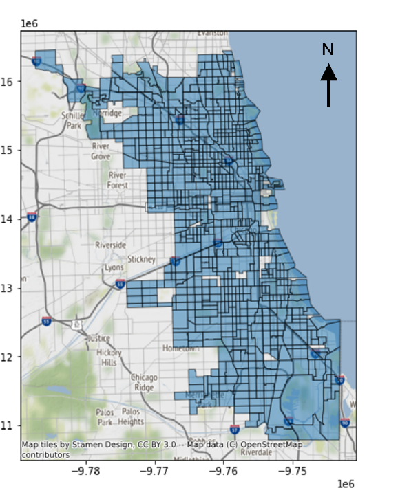

Look beyond immediate neighbors
Use both nearby and farther-away parts of Chicago when looking for useful demand patterns.
Rideshare Demand Forecasting
This project looked at whether recent rideshare activity and information about the city could be used to estimate where pickup demand would rise or fall next.
Can we give rideshare operators more time to prepare for where people will need rides?
01 · The Problem
A busy area now may not be busy an hour from now. At the same time, activity in one neighborhood can be related to what is happening nearby. Better forecasts can give rideshare operators more time to position vehicles where they are likely to be needed and reduce unnecessary waiting or idling.
02 · Breaking Chicago Into Areas

The study used 774 Chicago census tracts so demand could be predicted separately across the city.
Each census tract represents one part of Chicago. The project also included simple information describing how those areas relate to one another.
03 · What Goes In and What Comes Out
Demand was grouped into 15-minute intervals. Ten recent intervals were used to understand what had been happening, and the next eight intervals were predicted.
04 · The Approach
Rather than making a forecast from pickup counts alone, the project tested whether adding information about nearby, farther-away, and similar areas could improve longer-range predictions.
Use both nearby and farther-away parts of Chicago when looking for useful demand patterns.
Include distance and community characteristics instead of relying only on pickup history.
The strongest version gave the forecasting system more opportunity to combine demand and city information before making its predictions.
05 · The Data
Pickup records came from the Chicago Data Portal, while information about the census tracts came from Census.gov. Trips without usable pickup locations were removed, then the remaining rides were grouped by area and 15-minute interval.
06 · Results
Several forecasting approaches were compared on a separate set of Chicago rideshare data. The strongest version of the project produced the lowest prediction error at every one of the eight future checkpoints.
07 · What I Took From It
The project showed that forecasting demand farther into the future can benefit from looking beyond the recent history of one location. Information about neighboring areas, distance, and community characteristics gave the forecasting system a richer picture of what was happening across Chicago.
Project Resources
This page intentionally focuses on the transportation problem and the main ideas. The full report contains the detailed methods, equations, training setup, and complete comparisons.